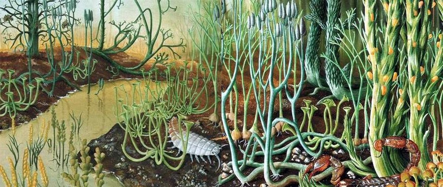
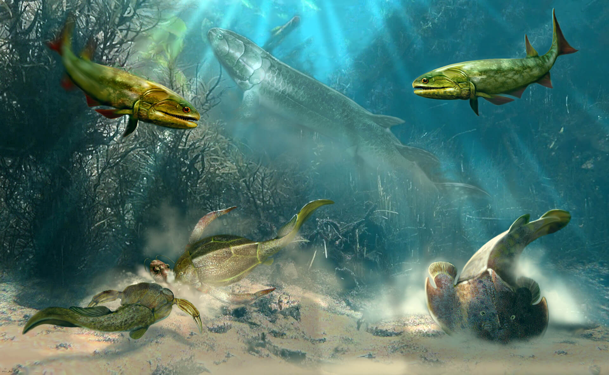
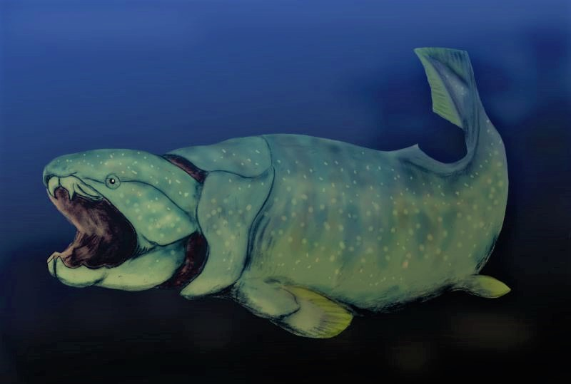
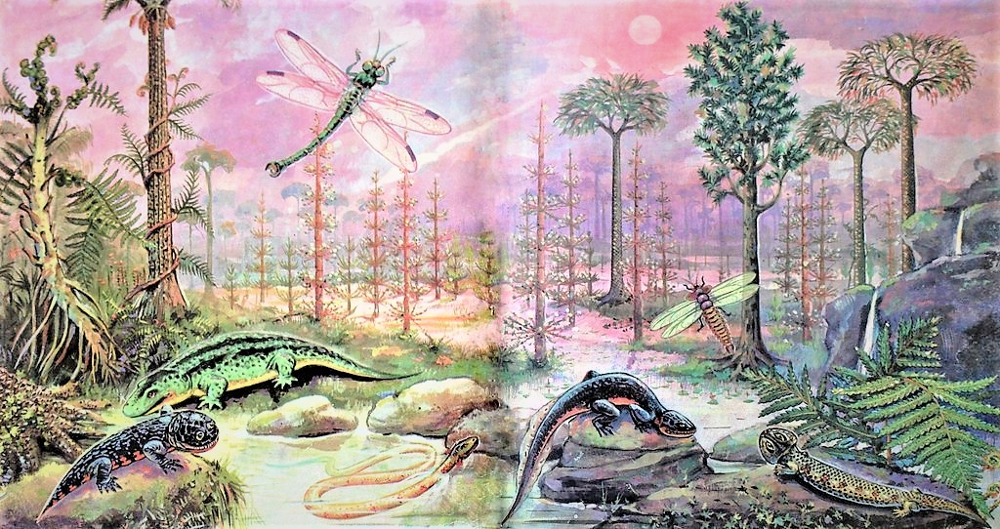
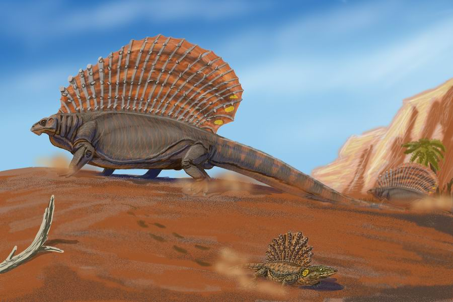
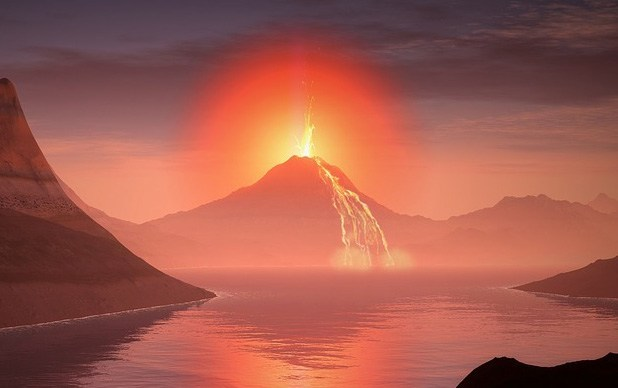

Le découpage du temps en ères et périodes géologiques.
Après l'Ordovicien, le Silurien (de -444 à -416 millions d'années).

La faune et la flore terrestre au Silurien
80% des espèces ont disparu à la fin de l'Ordovicien. Parmi elles, certaines étaient des prédatrices ; leur extinction permet à de plus petites créatures de se développer en paix et de conquérir de nouveaux territoires.
Et puisque la déglaciation entraîne la fonte des glaces, certaines espèces montent sur la terre ferme !
C'est à cette époque qu'apparaissent les premières plantes vasculaires sur Terre : des plantes à tiges, feuilles et racines, avec des vaisseaux conducteurs de sève.
En parallèle, le niveau de la mer monte peu à peu puisque les calottes polaires fondent. Des récifs coralliens se déploient en mer.
Les récifs sont le berceau d'une incroyable biodiversité marine. De très nombreuses espèces de poissons aparaissent au Silurien.
Puis vient le Dévonien (de -416 à 359 millions d'années).

La vie marine au Dévonien.
D'immenses créatures peuplent les mers du Dévonien, que l'on l'appelle communément "l'âge des poissons".
Mais la vie terrestre se diversifie elle aussi. Les paléontologues y retrouvent les premiers fossiles de vertébrés.
De grandes forêts de fougères peuplent les continents. Il fait assez chaud, 30°C en moyenne.
La vie prend ses aises et c'est alors que tombe une nouvelle épreuve :
La crise Dévonienne
Ces nouvelles forêts creusent le sol de leurs racines. Elles forment une terre riche en débris végétaux, bactéries et champignons.
Ce sol est parfois érodé et transporté jusqu'à la mer où il participe à la prolifération d'algues toxiques.
Les algues oxydent ces nutriments organiques à l'aide de l'oxygène qui diminue donc dans l'atmosphère.

Le Dunkelousteous, un immense poisson disparu pendant la crise Dévonienne. Credit : © LucasVB, Wikipedia.
Les animaux souffrent de ce manque d'oxygène.
L'O2 n'est pas le seul gaz dont la concentration diminue à la fin du Dévonien :
Les plantes consomment tant de CO2 pour réaliser la photosynthèse que ce gaz à
effet de serre décroit à nouveau dans l'atmosphère : la planète perd la chaleur qu'elle émet vers l'espace.
Il fait de plus en plus froid sur Terre.
Le refroidissement climatique combiné au manque d'oxygène entraîne la perte de 75% des espèces. C'est la deuxième extinction massive.
Elle ravage la vie marine. Les monstres du Dévonien disparaissent à jamais, tel Dunkelousteous,
un immense poisson carnivore de 10 mètres de long.
Le Carbonifère, de -359 à -299 millions d'années
La plupart des espèces terrestres ont cependant survécu à la crise Dévonnienne. Et au Carbonifère, la vie se diversifie à nouveau.

Une forêt au carbonifère. Credit : © The Paleobar.
Il fait en moyenne 15°C sur Terre, comme aujourd'hui. Les climats terrestres sont également très variés car la dérive des plaques a permis au continent
Gondwana (qui comprend l'Afrique, l'Europe, l'Inde, l'Australie, l'Antarctique et l'Amérique du Sud) de quitter le pôle sud et de remonter vers l'équateur.
Si la partie sud du Gondwana est occupée par des glaciers, les parties les plus tropicales présentent une vie luxuriante !
Ces grandes forêts de fougères donneront leur nom au Carbonifère puisqu'elles seront piégées dans des tourbières et se transformeront au cours des millénaires en
charbon, tel celui que l'on trouvait dans les mines du nord de la France au début de l'ère industrielle.
Les créatures du Carbonifère sont caractérisées par leur
gigantisme.
On pense que l'élévation du taux d'oxygène atmosphérique, l'abondance de nourriture et la rareté des prédateurs a permis aux êtres vivants d'atteindre des tailles records.

La Pangée. Credit : © LucasVB, Wikipedia.
Le Permien, de 299 à 252 millions d'années
Au Permien, le climat est affecté par la réorganisation des plaques tectoniques :
Le Gondwana dérive et finit par rencontrer le
Laurussia (soit l'Amérique du Nord, l'Europe du Nord et de l'Est),
formant un unique continent sur Terre : la
Pangée. Son assemblage forcé crée une grande chaîne de montagnes, la chaîne hercynienne. L'Oural, qui marque la frontière entre l'Europe et l'Asie, est l'une des reliques de ces grandes montagnes.
Sur le continent, il existe de terribles variations de température entre les moments de la journée et des saisons.

Un pélycosaure herbivore, l'Edaphosaure, avec à ses pieds, Platyhystrix, un amphibien. Tous deux sont pourvus de voiles thermorégulatrices qui leur permettent de gérer les contrastes thermiques journaliers. Credit :
© Dmitry Bogdanov.
C'est à ce moment qu'apparaissent les
synapsides : des reptiles
mamiféroïdes qui sont les ancêtres des mammifères.
C'est le cas par exemple des pélicosaures, comme l'Edaphosaure et le Dimetrodon, qui sont des synapsides terrestres. Il ressemblent à des dinosaures avec une crête sur le dos bien qu'ils n'en soient pas.
Les dinosaures n'arriveront qu'après la Grande Extinction qui mit fin au Permien.
La Grande Extinction
La plus grande crise biologique de l'histoire de notre planète est cette fois encore causée par... un changement climatique !
Voyons ce qui l'a déclenchée :
A la fin du Permien, la Pangée prend la forme d'un croissant de lune creusé par une mer appelée Thétys et entouré d'un océan.
Si l'air marin apporte un peu d'humidité près des côtes, il fait très sec dès que l'on s'enfonce dans les terres. De grands déserts occupent la Pangée.
La sécheresse fragilise déjà la biodiversité. Mais si les espèces s'adaptent de leur mieux au manque d'eau, elles seront impuissantes face à la catastrophe à venir :

Il y a 252 millions d'années,
de terribles éruptions volcaniques ont lieu en Sibérie. Elles ne sont pas causées par un simple volcan : il s'agit d'un
supervolcan, un peu comme celui qui sommeille actuellement au Yosemite.
Les forêts sont ravagées par des écoulements de lave tandis que le panache volcanique libère du dioxyde de soufre SO2 et du dioxyde de carbone CO2 dans l'atmosphère.
Ces gazs créent des pluies acides, ils acidifient l'océan et détruisent les barrières de corail, berceaux de la vie marine.
Mais ils créent aussi un puissant
effet de serre.
Alors la Terre se réchauffe. Dans l'eau, des poches de méthane entourées de glace fondent et sont libérées dans l'atmosphère ce qui amplifie encore le réchauffement.
La biodiversité en prend un coup. En 60 000 ans,
96% des espèces disparaissent, dont de nombreux amphibiens, des reptiles, des insectes, des trilobites ou les grands scorpions des mers.
60 000 ans, c'est très court à l'échelle des temps géologiques !
Cette Grande Extinction était le résultat d'un changement climatique semblable à celui que nous connaissons actuellement.
Sauf que le nôtre n'est pas causé par un supervolcan, mais par de petits bipèdes qui jouent avec le charbon, les gazs et le pétrole enfouis dans le sol.
Ces petites bêtes détruisent la planète comme des grandes. Il paraît qu'elles sont très intelligentes ! Mais au lieu de prendre soin de leur environnement, elles brûlent les forêts, empoisonnent les mers et réchauffent l'atmosphère...
Nous avons réussi à changé le climat en quelques centaines d'années. 60% des animaux sauvages ont disparu en 40 ans. Quel exploit !
Bref. Nous n'en sommes pour l'instant qu'à
la crise du Permien, la plus grande des extinctions massives.


{kind=link}
{kind=link}